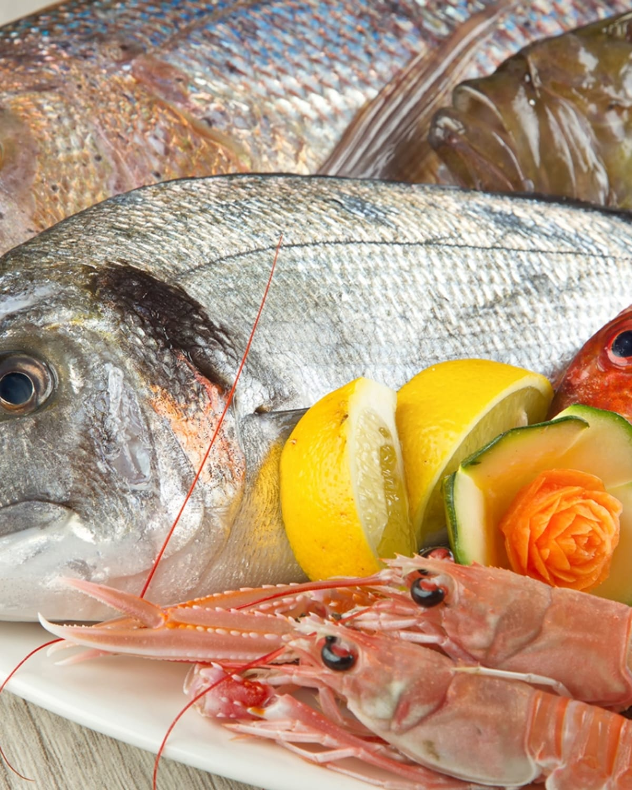
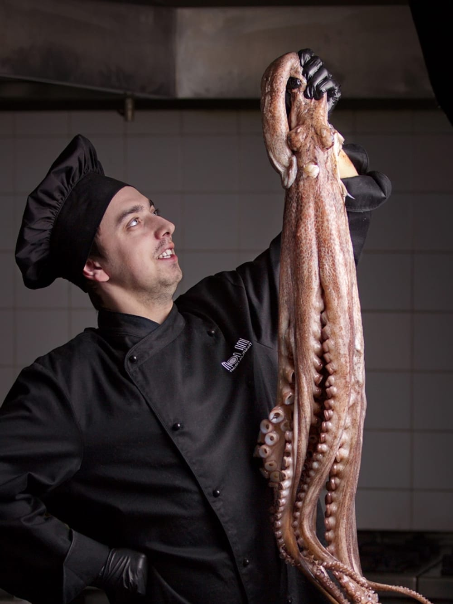
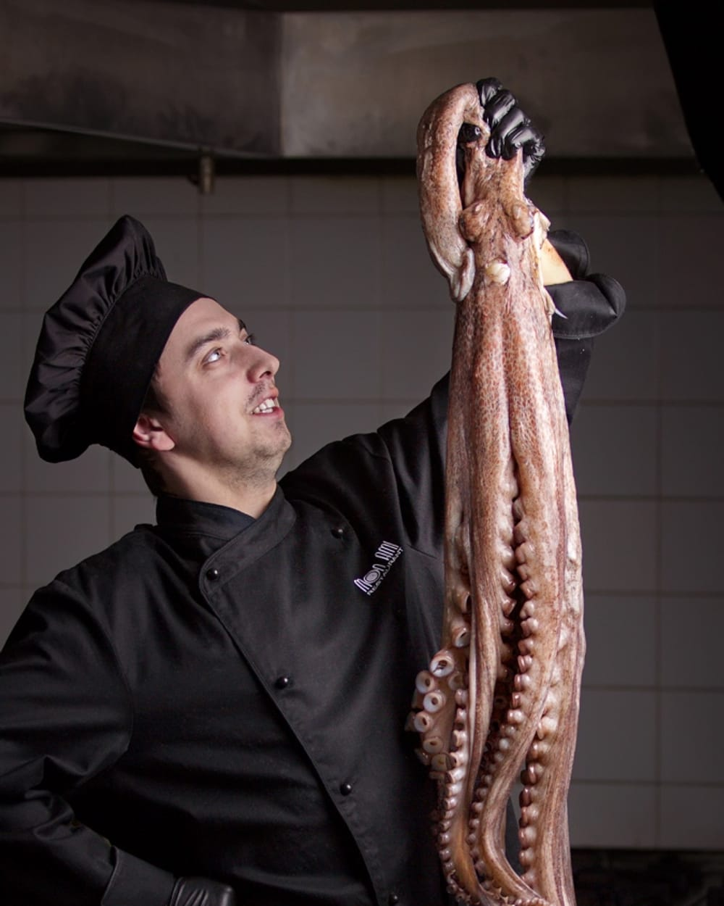
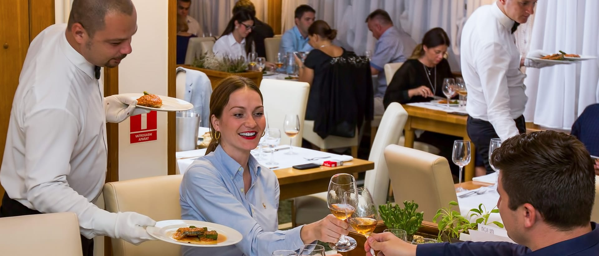
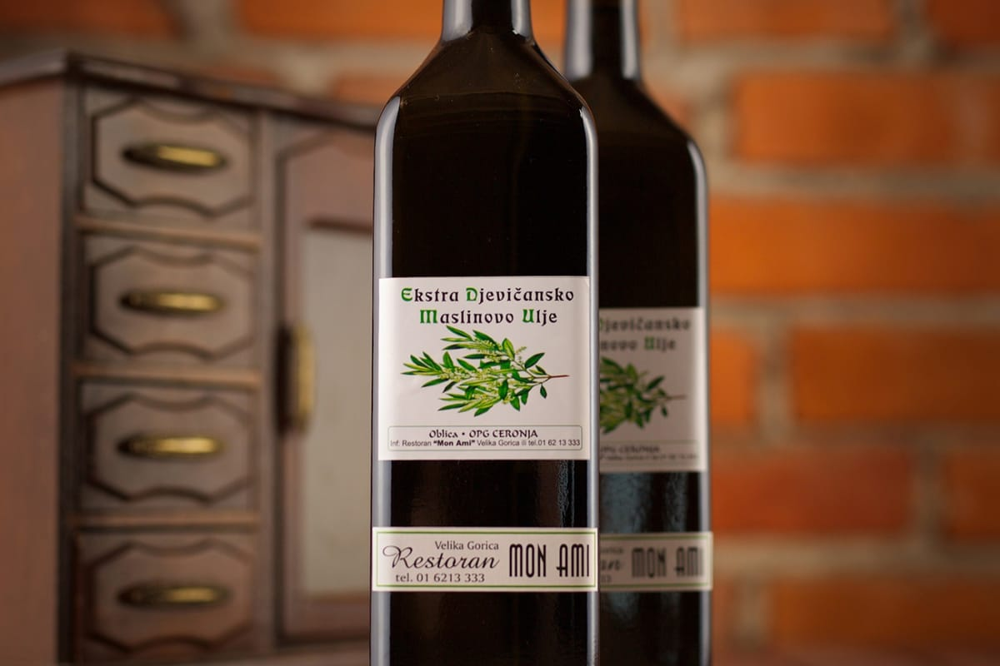
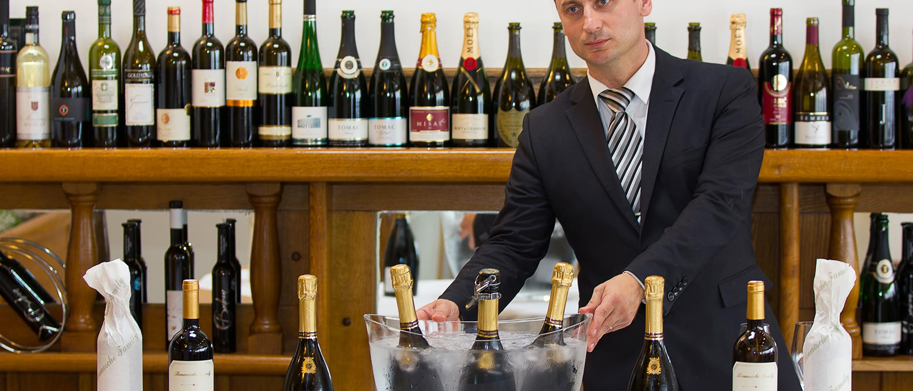
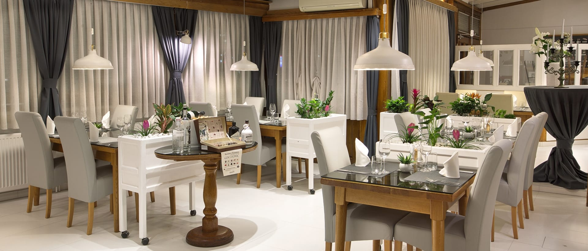
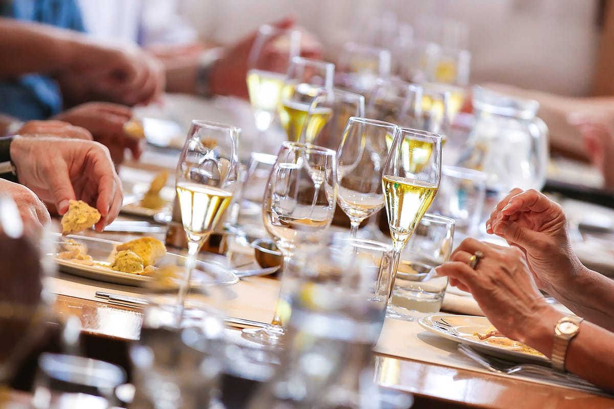

MON AMI
RESTORAN · VELIKA GORICA · OD 1997.
Dvije obale, jedan stol.
Obiteljski restoran u srcu Velike Gorice. Od 1997. jadranska riba i turopoljsko polje na istom jelovniku — desetak minuta vožnje od Zračne luke Zagreb.

uto–sub 11–23 · pon 11–16:30 · ned zatvoreno
Cijeli tjedan
| Ponedjeljak | 11:00–16:30 |
| Utorak | 11:00–23:00 |
| Srijeda | 11:00–23:00 |
| Četvrtak | 11:00–23:00 |
| Petak | 11:00–23:00 |
| Subota | 11:00–23:00 |
| Nedjelja | zatvoreno |
Nedjeljom i blagdanom ne radimo.
70 mjesta · separe za 10 · natkrivena terasa
Cijena po kilogramu
Ribu i školjke iz vitrine vagamo pred vama i cijenu vam kažemo prije pripreme.
Oznaka 8–12 kom/kg označava veličinu: osam do dvanaest škampa čini jedan kilogram. Veći škamp, manje komada.

RIBA
Riba stiže tri puta tjedno.
Brodovi ne isplovljavaju svaki dan, pa radimo s više ribara. Ljeti meduze zatrpaju mreže i ulov padne — zato nikada ne ovisimo o jednom izvoru.
Ribu i školjke iz vitrine vagamo pred vama. Cijena se određuje po kilogramu i mijenja se s ulovom — reći ćemo vam je prije nego što krenemo u pripremu.
- škrpinascorpionfish
- brancinsea bass
- kovačJohn Dory
- zubatacdentex
- crna oradablack sea bream
- sabljarkaswordfish
- kvarnerski škampiKvarner langoustines
- jastoglobster
Vrste ovise o danu. Pitajte što je jutros stiglo.
Priznanja
Priznanja
Restaurant Croatica
među 100 vodećih hrvatskih restorana
23 puta
na listi 100 najboljih u Hrvatskoj
…a naša najvažnija preporuka su naši gosti.
MORE

KOPNO
Skradin i Turopolje, pod istim krovom.
Božo Ceronja došao je iz skradinskoga kraja. Barica je rođena Turopoljka. Kad su 1997. otvorili restoran na glavnom trgu Velike Gorice i stavili jadransku ribu na jelovnik u gradu koji je jeo s roštilja, to nije bila gesta — bio je to rizik.
Ideja je bila jednostavna i tvrdoglava: dvije kuhinje pod istim krovom, mediteranska i kontinentalna, na istom jelovniku, bez kompromisa ni prema jednoj strani. Riba s Jadrana, tartuf i meso iz Turopolja, ulje iz vlastitog maslinika u Skradinu.
Danas restoran vodi njihov sin Bruno, zajedno s majkom. Kuhinju već sedamnaest godina vodi chef Goran Marko Beus, rodom Splićanin, s karijerom na dalmatinskoj obali i na brodovima.
Ono što se od 1997. nije promijenilo: kvaliteta namirnice i njezina izvornost. Većina onoga što kuhamo dolazi iz kruga do stotinu kilometara.
- 1997.Božo i Barica Ceronja otvaraju Mon Ami na glavnom trgu.
- 2008.Goran Marko Beus preuzima kuhinju.
- 2018.Prva preporuka MICHELIN vodiča.
- 2026.MICHELIN Selected i Gault&Millau 13,5/20.
„Prava mala revolucija.”
Ljudi
Ljudi
Obiteljska kuća, ista od 1997.

Goran Marko Beus
šef kuhinje od 2008.
Rodom Splićanin. Karijeru je gradio na dalmatinskoj obali i na brodovima. Mediteransku kuhinju definira s tri stvari: kvalitetno ulje, svježe voće i povrće, i što manje termičke obrade.
„Tajna je u namirnici — pravo slavlje kraja oko nas.”
Bruno Ceronja
vlasnik i domaćin
Druga generacija. Restoran vodi zajedno s majkom Baricom.
„Sve što može biti lokalno koristimo u kuhinji.”

Vinsku kartu vodi sommelier Zlatko Šimac. U kuhinji nas je desetak. Zapošljavamo lokalne ljude, a berbu maslina i grožđa odradimo zajedno.
VLASTITA PROIZVODNJA
Ulje, tartuf i vino

Ulje iz našeg maslinika u Skradinu
Maslinik je obiteljski, u skradinskom kraju, pretežno sorta oblica. Ulje punimo pod etiketom Mon Ami i koristimo ga gotovo u svemu što kuhamo — od prženih gavuna do dimljenih dagnji.
- SortaOblica
- MaslinikSkradin, OPG Ceronja
- Priznanjenagrađivano zlatnim medaljama
Ulje, hrvatske zelene masline i čaj od maslina možete kupiti kod nas.
„Bez njega ne možemo ni zamisliti kuhinju.” chef Goran Marko Beus
Maslinik, ulje i njegova priznanja isključivo su naši. MICHELIN i Gault&Millau u svojim tekstovima ne spominju naše ulje.
Crni turopoljski tartuf, svaki dan u godini
Godinama smo tartuf dovozili iz Istre. Danas ga vadimo ovdje — svježi autohtoni crni turopoljski tartuf, cijele godine, naribati pred vama za stolom, najčešće preko carpaccia od tune.
Ako nas nazovete dan ranije, možete ga i kupiti i naribati sami.

Šezdeset etiketa i jedno naše
Vinska karta broji 60 etiketa, poglavito hrvatskih proizvođača. Vino kuće proizvodimo sami: cuvée Chardonnay i Graševina iz podregije Pokuplje, vinogorje Vukomeričke gorice. Kartu vodi sommelier Zlatko Šimac.
Nekoliko etiketa s karte
- Vino kuće — cuvée Chardonnay-Graševina, Vukomeričke gorice
- Krauthaker Graševina Mitrovac, Kutjevo
- Pjenušac Poy, Mladina, Plešivica
Cijelu kartu ne objavljujemo. Za preporuku uz vaš izbor — nazovite nas.
Većina namirnica dolazi iz kruga do stotinu kilometara.
Od njih troje chef slaže semifreddo od vanilije i meda sa slanom kremom od lješnjaka i coulisom od kruške.

Prostor i prigode
Interijer je sadržan od prirodnih materijala koji predstavljaju naš pristup življenju i poslovanju. Hrastovi stolovi, mramor i kamen. Sala s bijelim stolnjacima i natkrivena terasa, nešto opuštenija.
- Glavna dvorana70 mjesta
- Separe — zatvorena poslovna druženja10 mjesta
- Natkrivena terasa — grijanaoko 20 mjesta
Mon Ami je idealno mjesto za poslovna druženja, svadbe, pričesti, krizme i krštenja.
- Svadbe i krštenjado 70 osoba
- Pričesti i krizmedvorana ili terasa
- Poslovni ručkovi u separeu10 osoba
- Tematske večeri i sezonski daninajava telefonom
Restoran prima do 70 gostiju u dvorani i 10 u separeu. Za veće skupine i svadbe javite se najmanje tjedan dana unaprijed kako bismo dogovorili detalje.
Ulaz kućnih ljubimaca nije dozvoljen. U prostoru se ne puši.

Galerija
Galerija
Dvadeset ovih fotografija godinama je stajalo na našem poslužitelju i nikada se nije pojavilo na stranici.
FOTOGRAFIJE: JOSIP ŠKOF, MARIO ŽILEC, JAKOB GOLDSTEIN
Posjet
Posjet
Radno vrijeme
| Ponedjeljak | 11:00 – 16:30 |
|---|---|
| Utorak | 11:00 – 23:00 |
| Srijeda | 11:00 – 23:00 |
| Četvrtak | 11:00 – 23:00 |
| Petak | 11:00 – 23:00 |
| Subota | 11:00 – 23:00 |
| Nedjelja | zatvoreno |
Blagdanom ne radimo.
Kako doći
- AUTOMOBILOM8 do 12 minuta od Zračne luke Zagreb, oko 6 km
- AUTOBUSOMpolasci sa Zračne luke svakih 35 minuta, oko 2 €, pa 3 minute hoda od autobusnog kolodvora
- IZ ZAGREBAlinija 290 s Kvaternikova trga, oko 30 minuta
- ROMOBILOMgradski električni romobili u neposrednoj blizini
Rezervacije primamo telefonom i putem obrasca. Rezervacija je poželjna, osobito vikendom. Za veće skupine i proslave javite se ranije.